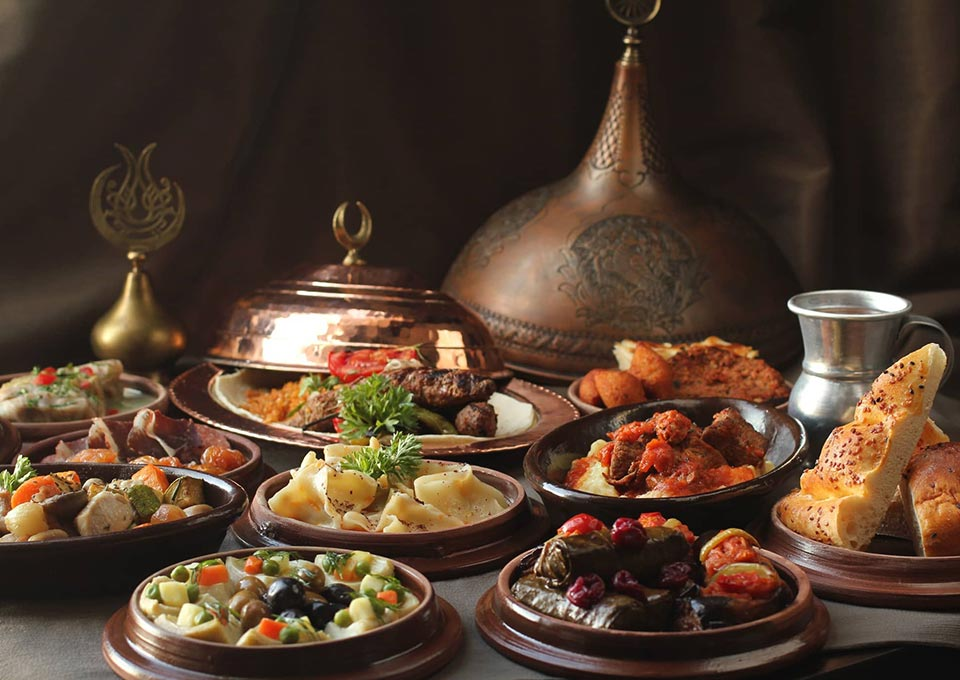

In this web page, you will see some dishes belonging to Ottoman/Turkish cuisine that are also commonly cooked in Middle Eastern/Balkan countries.
First of all, what exactly is Ottoman cuisine?
These dishes have been cooked in the magnificent palaces of the Ottoman Empire for centuries.
These dishes hold great cultural importance.
Many countries that were once within the vast borders of the Ottoman Empire still cook these dishes today.

These countries extend from Europe, starting from the Balkans, all the way to North Africa.
Examples of These Countries:
And so on...
With the recipes on this web site, you will be able to prepare some famous dishes that were greatly enjoyed by the grand sultans of the Ottoman dynasty!
Click on the dish name to see the recipe page!
Click on the HOME botton to go back to Welcome page.